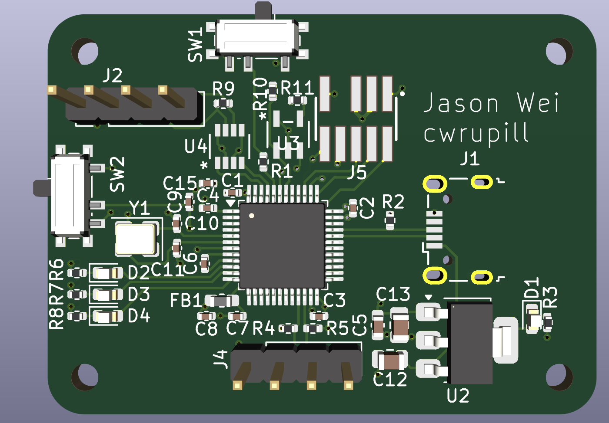
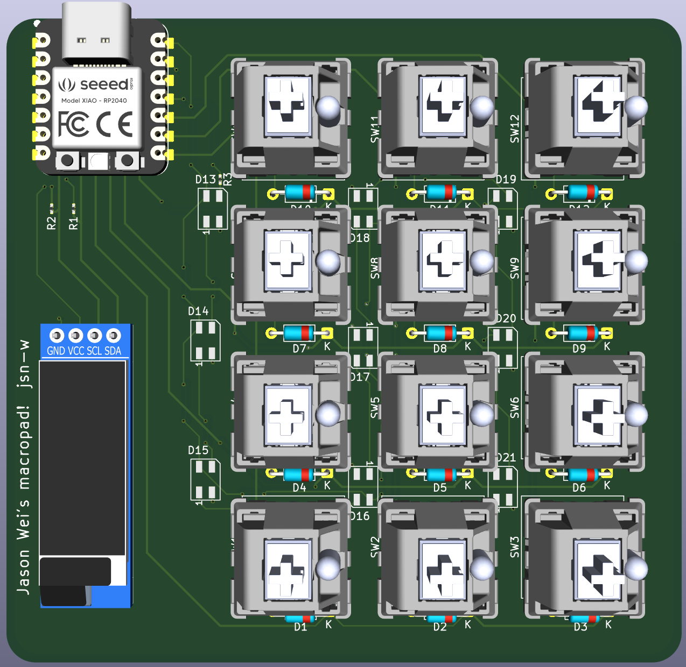
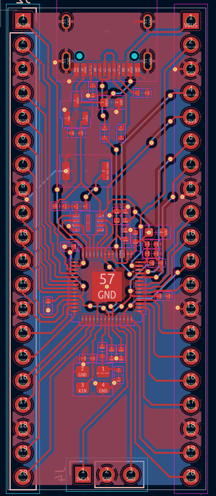
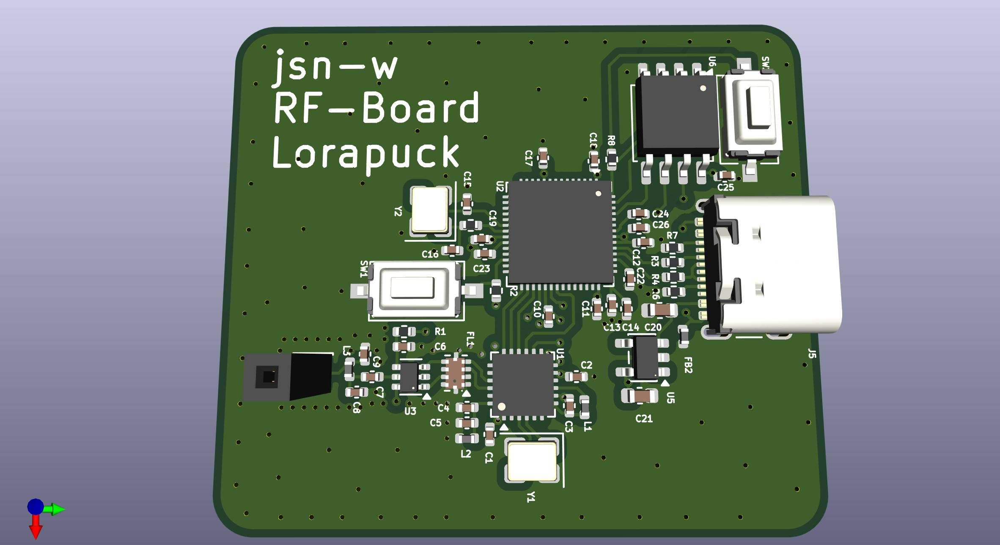
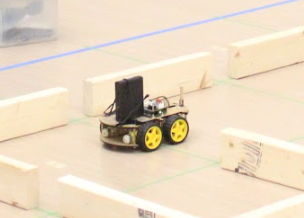
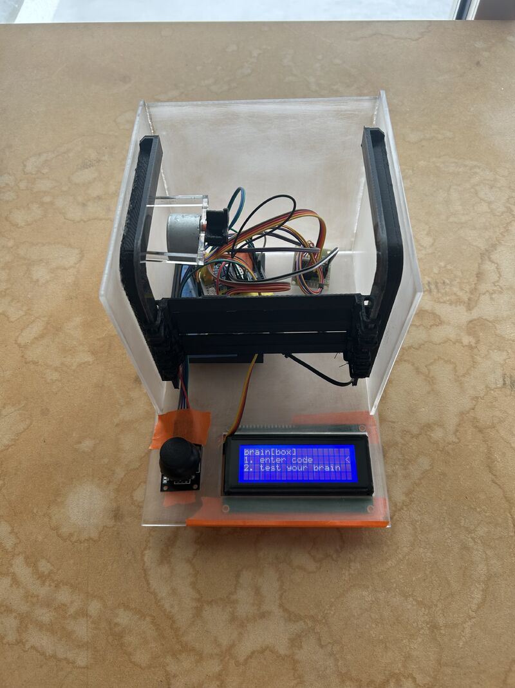
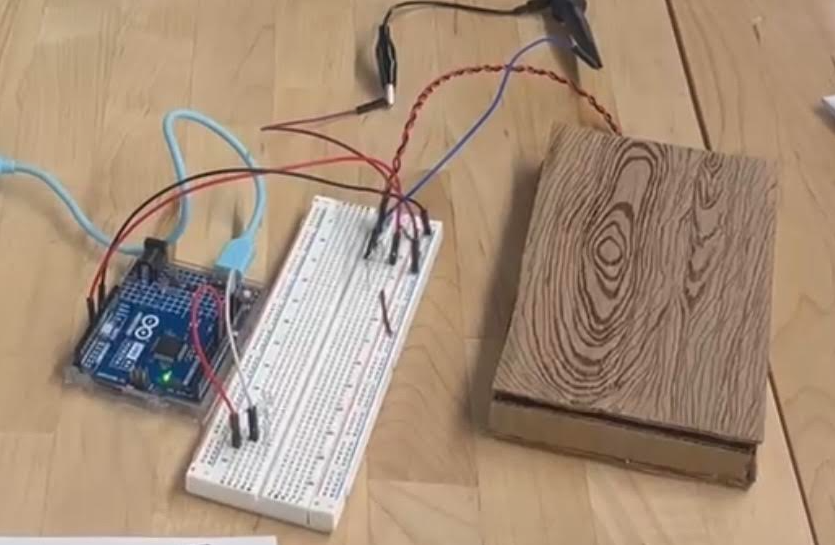
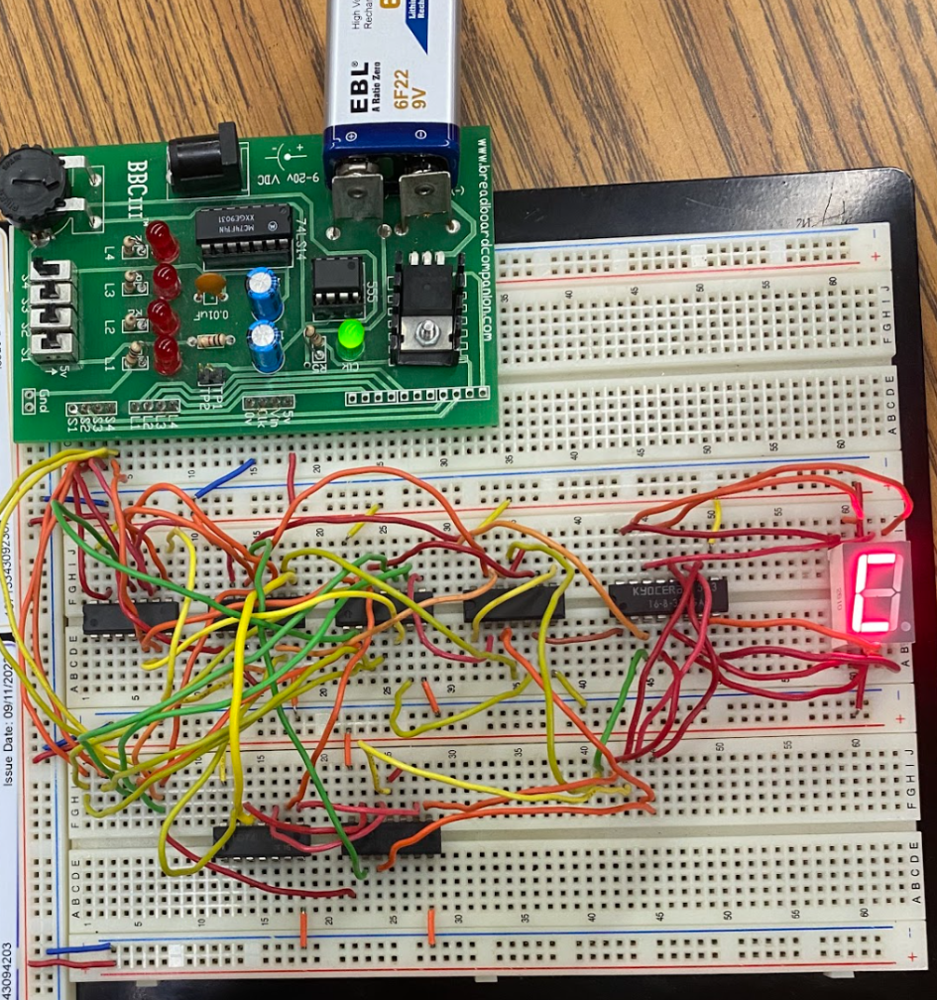

CWRU Motorsports
I joined our collegiate Baja SAE team as a freshmen, where I worked on the vehicle's wiring harness and designed enclosures for the boards on it. It was also my first time soldering small packages (down to 0402), and I still want to learn other methods of soldering SMT components. For this school year, I am designing a valve control board for controlling the semi-active suspension shocks. I will also be learning more about firmware with STM32 to provide control and feedback to the shocks.
Alongside the electrical systems work, I also developed my manual machining skills (mills and lathes) to manufacture several components for our vehicle. Throughout last summer, I also explored manufacturing beyond manual machining and learned how to CAM basic parts for 3-axis CNC machining.

STM32 Dev Board
This was the first development board I made. This was STM32-based with CAN communication support and external LEDs
for debugging. I also Implemented supporting circuitry including power regulation, an external clock, and communication interfaces. This project really taught me the important component that a microncontroller needs to operate from the ground up.
hackClub - Blueprint
The opportunity to design circuits and actually work with the board came from a hackClub. I learned to create custom-designed printed circuit boards from watching videos from Phil's Lab. I initially started designing circuits and PCBs using KiCad. I am now currently using Altium.

Macropad
This is a macropad that I made with HackClub. It includes a switch matrix with 12 mechanical keys,
an OLED display, and backlit RGB LEDs. The firmware was programmed
using QMK on a Raspberry Pi microcontroller.

Raspberry Pi Dev Board
This is the second development board that I made. It is a compact Raspberry Pi development board with power regulation, clocks, and GPIO pins for prototyping.

RF Board
Designed a 2.4GHz RF board integrating an STM32 microcontroller and wireless
transceiver. Focused on RF layout considerations, grounding, and an antenna
to ensure reliable communication.
Arduino & Electronics
Built embedded systems using Arduino and sensors, working with multiple communication protocols and real-time data from ultrasonic sensors, gyroscopes, and encoders. Below are some of the projects I have built in the past.

Autonomous Robot
Me and a friend built an autonomous robot designed for Science Olympiad. We initially used a kit and gradually added sensors to tailor our needs.
We used ultrasonic sensors for obstacle detection and a gyroscope to sense its surroundings and navigate
an obstacle course with 1 cm precision. I learned how to read specific data from sensors and use PID control to callibrate the desired potition of the robot. We earned 1st place in the 2025 states competition and several other ones.

brain[box]
For our school's hackathon, we built a device that encourages learning through a reward system. The program asks questions about a specific subject and gives you feedback for your answers. In the future, we would like to implement an AI model to expand the fixed-set of questions we have and tailor the questions to the student's needs. Overall, we won 4th place at our school's hackathon and also earned a scholarship from Rockwell Automation for innovative projects.

Knock Sensor
I built a piezoelectric knock sensor for an intro-engineering course during my first year in college. This device that detects and interprets tap patterns
as coded input. This project taught me about signal conditioning and thresholding in Arduino (using MatLab) to reduce noise and false triggers.

Catchphrase
This project spells out a word when a series of switches are pressed. I learned how to optimize logic circuits using the least number of components. I also learned how to use Multisim to design and simulate large circuits.